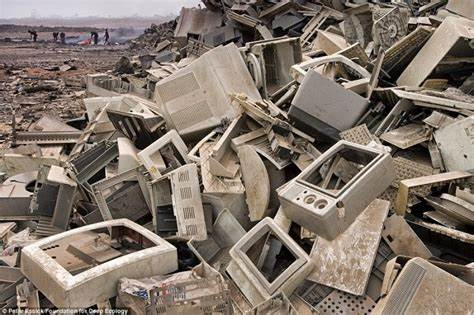

The Environmental Pros and Cons of Electronics
For Arguments
-
Computers can be used to monitor the conditions of plants, weather and the north
and south poles with satallites. This is beneficial to the environment since it
makes us aware of the global conditions of the planet.
-
Smart meters are helping people cut down their energy use.
-
Our daily use of computers such as TVs helps to raise awareness in the issues
of the environment such as animals near extinction and, of course, climate change.
Against Arguments
-
Computers contribute a lot to energy waste, which leads to the burning of lots of
fossil fuels. This makes it more difficult for people who are trying to work towards
being carbon neutral in order to slow climate change.
-
Rare materials such as europium and dysprosium are used to make some componants of smartphones
and 70 out of the 83 stable non-radioactive elecments are used in some place in smartphones.
As can be imagined similarly to whenever a precious resource is found, there is little
regard for the preservation of the nearby environment.
-
Disposal of computers is an even bigger issue than their creation, since many broken
compters find themselves in poorer countries where they are burned down for the priecious
metals and components. This is almost always dangerous for the workers and poisonous to
thye environment.
